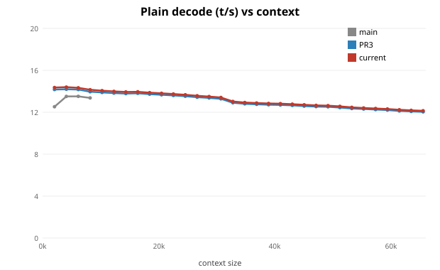
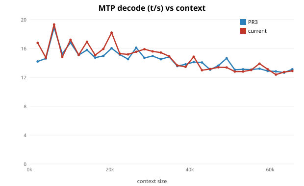

ds4-bench has no --mtp (combined-forward is PR2 work). So main is plain-only, ≤8k.

| ctx | main | PR3 | current |
|---|---|---|---|
| 2,048 | 99/12.53 | 396/14.17 | 419/14.36 |
| 4,096 | 396/13.51 | 405/14.20 | 405/14.40 |
| 6,144 | 388/13.52 | 398/14.17 | 398/14.33 |
| 8,192 | 384/13.37 | 394/13.96 | 392/14.15 |
| main→PR3 | PR3→current | |
|---|---|---|
| plain (2k-8k) | 13.23→14.12 (+7%) | 14.12→14.31 (+1%) |
| MTP (2k-64k) | n/a (no MTP bench) | 14.38→14.61 (+1.6%) |
main→PR3: GB10 enablement (HBM-resident lets 64k ctx fit, share-warp Q8 +decode, MTP combined-forward +10.7%). PR3→current: session work (moe_down, f16 prewarm) — modest at long ctx; biggest where this sweep doesn't look (short-ctx decode, short-prompt TTFT ~2x).